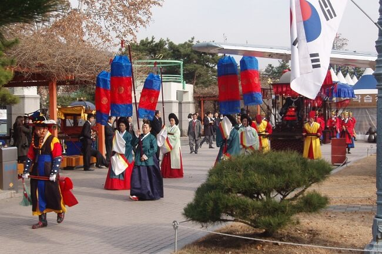

morly旅游圈
韩国（Korea），全称大韩民国（대한민국/大韩民国Daehan Minguk），简称韩国（한국/韩国 Hanguk），又称南韩、南朝鲜。成立于1948年8月15日，是位于东亚朝鲜半岛南部的共和国，国名来源于古代朝鲜半岛南部的三韩部落（辰韩、马韩、弁韩），英文名Korea源于古名“高丽”。 韩国的行政首都是世宗，总统府和国会目前仍在首尔，韩国成为拥有两个首都的国家。
韩国位于东北亚朝鲜半岛南部，三面环海，西濒临黄海，与胶东半岛隔海相望，东南是朝鲜海峡，东边是日本海，北面隔着三八线非军事区与朝鲜相邻，领土面积占朝鲜半岛总面积的4/9。韩国历史上曾是中原王朝的藩属国，清末，清朝于甲午战争中战败，韩国脱离与中原王朝的藩属关系，后成立“大韩帝国”，1910年被日本吞并，二战后光复取得独立。 1950年爆发朝鲜战争，南北分裂，北方国家称朝鲜，南方国家称韩国。
韩国有哪些值得去的地方呢，接下来跟着我一起游韩国吧
No.1 新沙洞林荫道
新沙洞林荫道是指从地铁三号线新沙站到现代高中之间相通的一条街道。长达700m的路边上种上了一排排的大树，因此被叫做“林荫道”。在这里除了购物外，还有为数不少的餐厅、画廊等，整体形成了一个集购物、休闲又附有风格于一身的大街。
新沙洞的林荫路算得上是首尔最独具小资情调的地方，从新沙地铁站出来就能看到一条主街道，被叫做林荫路也是有原因的，阳光透过两侧的树叶远远渗进，照射在建筑上满是林荫，在这样安静又时尚的地方逛街，很静谧很享受。
这里林立了许多品牌直营店，还有精致的小众买手店，衣服的质量和价格都更高一些。有很多韩国的本土品牌，基本在300-400人民币之间，除了服装店还有很多小资情调的咖啡厅和甜品店，韩国人真的好爱和咖啡，走到哪都能看到咖啡馆
【地点】江南区, 新沙洞 , 538 号 J-Tower 至狎鸥亭洞现代高等学校
No.2 弘大
弘益大学位于韩国的首都首尔的市中心地带，创建于1946年，是一所著名的综合性大学，也韩国最负盛名的艺术院校。以美术系而著称的弘益大学，连带它校园前的街区都洋溢着艺术的气息，艺术爱好者常常在这里展示自己的作品，而且这里有很多公演场和展示馆，以及别具一格的咖啡厅。如今，“弘大”一词不再仅指一所大学，而包括了弘益大学周边街区。
如果你是潮人，如果你厌倦了例行公事般的大众行程，如果你想了解首尔年轻、激情和前卫的一面，就去著名的弘大吧！
学校周边美食多，潮人多，公演多，酒吧多（晚上酒吧附近帅哥美女超多），能逛的店也多，非常热闹。每次来韩国都会安排一天到这边吃东西，买衣服。弘大附近chuu \stylena \cherry koko\milkcocoa 的店都非常值得一逛。
milk cocoa非常适合拍照，里面的衣服都是按颜色放好 满满的小花裙子
弘益大学周边到了晚上有很多人在这边公演，有男团跳舞更是把路堵的水泄不通 挤都挤不进去。
【地址】首尔麻浦区上水洞弘益大学
No.3 汉江
汉江公园很大，由12个地区构成，汝矣岛作为其中的一个地区，也是其精华片区。春天，这里是赏樱花的最佳去处。夏天，很多情侣和家庭来这里吹着风，喂鸽子、戏水。不少韩国明星也喜欢到这里沿着汉江骑行，一起骑行也已经成为韩国年轻人中流行的新约会形式。外国游客还可以在这里乘坐汉江游轮欣赏首尔沿江夜景。
【地址】5号线汝矣渡口站2号口、3号口，元晓大桥下游
No.4 庆熙大学
把庆熙大学称为韩国最美最浪漫的大学一点都不为过。学校创办于1949 年，是韩国排名第五的名校。
如果你看过《假如爱有天意》，那么一定会对那段雨中奔跑记忆犹新。当赵寅成放弃了撑伞带着孙艺珍奔跑在雨中，最后抵达的正是庆熙大学那座历史悠久的图书馆。图书馆外表华丽，内部古朴而丰富，是庆熙的地标性建筑物之一。
庆熙大学作为出产韩流明星的学校，已经在韩饭中声名远扬。在庆熙大学美丽的校园里，随处可见罗马式建筑，春天的樱花、秋天的枫叶每年也会吸引很多人慕名前来。
【地址】首尔江北区（地铁1号线到回基站，1号出口出，乘坐绿色01号巴士，终点站下车即可。）
【门票】10元
内容整理至网络，如有侵权，请联系我们！1255394075@qq.com
